가성비 · 학습자용
시디즈 IBLE (아이블, 일명 서울대 의자)
189,000원
12개 약 227만원 (바퀴형이면 +12만원)
S라인 메시 등판 · 틸팅 기능 없음(공식 설명) · 189,000원은 글라이드 프레임 기준, 높이조절형/바퀴 옵션은 199,000원(공식몰 표시)
보증기간이 판매처마다 다르게 표시(SSG ‘무상 1년’) — 구매 전 확인
12석 ㄷ자(U형) 토론 배치를 메인으로, 모든 품목을 프리미엄/가성비 2안으로 정리했어요. 입주 준비 할 일(용달 예약 포함)도 맨 위에 넣었어요.
전용 44.205㎡(약 13.4평) 지식산업센터 사무실에 교육 책상 12석(ㄷ자 상석이 입구 쪽), 입구 쪽 탕비, 그리고 방 뒤쪽 절반은 소파 라운지 + 75형 전자칠판(소파 앞)과 낮은 책장 가벽 뒤 대표실(대표석·서진이 책상)로 나눠요. 대표 모션데스크는 오른쪽 끝 벽, 서진이 책상은 그 옆 창 쪽 벽이에요. 복합기, NAS·공유기, CCTV 2대도 넣어요. 3D 프린터는 창 쪽 왼쪽 문 밖 외부 펜트리 우측 끝에 둬요. 로봇청소기와 34형 울트라와이드 모니터는 기존 사무실 것을 가져와요. YouTube 촬영 코너와 포커스석은 이번 배치에서 고정 자리가 없어져 선택·이동식이에요.
ㄷ자 12석이 추천. 문을 열면 ㄷ자 상석이 바로 보이고, 전자칠판은 소파 앞에서 소파와 ㄷ자의 열린 쪽을 비스듬히 향해요. 뒤쪽 책장 가벽(낮은 빌리 ×4) 너머가 대표실이에요. 15석은 통로가 더 빠듯해요.
모션데스크, NAS, iPhone, 로봇청소기, 34형 모니터는 있는 것을 가져와요(0원). 모션데스크·NAS는 용달로 옮겨요(가벽 책장은 새로 사요).
모두 2026.11.01(KST) 판매 페이지 표시값. 쿠폰·옵션·배송비에 따라 달라요.
집→사무실로 옮길 짐: NAS, 모션데스크(집에 있는 것), 그 밖의 짐. 입주일(2026-11-10, 화) 기준으로 3~5일 전에 예약하는 걸 권장해요. 구매 항목이 아니며 업체·요금은 조사하지 않았어요.
지식산업센터는 입주 가능 업종·시설 사용 규정이 있을 수 있어요. 교육장 운영, 촬영 스튜디오, 3D 프린터(소음·냄새), 이삿짐 엘리베이터 사용 시간을 관리단/관리사무소에 확인하세요.
입주 전에 설치 일정을 잡고 공유기·NAS 위치(왼쪽 벽 복합기 위 선반)를 정해두면 첫날부터 쓸 수 있어요.
제노스미디어 CO750LT4K 75형(당근 중고, 150만원). 상태·AS·스탠드 바닥 크기(도면은 가정)·무게 53.8kg 운반 방법을 거래 전에 확인하세요. 링크는 받지 못해 가격·사양은 사용자 제공 값이에요.
사업자 주소지·우편물 주소 이전 절차를 확인하세요(필요 서류는 세무서·관리사무소에서 확인).
운반 전 중요한 데이터는 별도로 백업해 두세요. NAS는 이삿짐으로 옮기고 사무실에서 공유기 옆(왼쪽 벽 복합기 위 선반)에 놓아요.
방 가로·세로, 문·창문, 콘센트 위치를 재서 알려주시면 배치도를 확정해요.
책상 5개를 이어 붙여 끊김 없는 ㄷ자로 만들었어요(양쪽 다리 1800×600 두 개씩 + 1200×600 상석). 막힌 쪽(상석)이 입구 쪽이고 열린 쪽이 뒤쪽이에요. 문 왼쪽에 탕비가 있어요. 방 뒤쪽 절반은 이번에 크게 바뀌었어요: ① 75형 전자칠판을 소파 앞(방 왼쪽·라운지)으로 옮기고 소파·ㄷ자 쪽으로 비스듬히 돌렸어요 ② 낮은 책장(IKEA 빌리 80×28×106cm ×4)으로 가벽을 세워 회의실(ㄷ자 쪽)과 대표실을 나눴어요 ③ 대표 책상을 오른쪽 끝 벽에 두고 화면이 입구에서 안 보이게 서쪽(방 안쪽)을 향하게 했어요 ④ 서진이 책상을 그 옆 창 쪽 벽에 놓았어요. 왼쪽·오른쪽은 모두 도면 이미지 기준(입구가 위, 창이 아래)이에요.
🧊 3D 모델로 보기 (돌려보고 확대 · 12/15석 전환) →
스탠드얼론 이미지: layout-12.png ↗
냉장고·정수기·커피머신을 문 왼쪽 앞 벽으로 옮겼어요. 좌표는 왼쪽 벽·앞 벽(문 쪽) 모서리에서 잰 값이에요(모두 도면 가정 기준).
| 구분 | 이전 | 이번 배치(도면에 반영) | 이유 |
|---|---|---|---|
| 냉장고·정수기·커피 | 왼쪽 벽을 따라(y 0.8~2.3m) | 앞 벽 문 왼쪽 한 줄: 냉장고(x 0.05~0.61m) → 카운터(x 0.62~1.5m, 깊이 0.6m) 위에 정수기(x 0.66~0.83m)·커피머신(x 0.9~1.32m)·선반 | 입구 바로 옆·회의 영역과 가깝고, 카운터 끝(x 1.5m)이 문 열린 폭(x 1.8m)과 0.3m 떨어져요. |
| 이용·대기 공간 | 왼쪽 벽 카운터 앞 | 카운터 앞 x 0.05~1.5m, y 0.69~1.49m(깊이 0.8m) | 문 여닫이 반경(x 1.8~2.7m, y 0.9m까지)과 안 겹쳐요. 2~3명이 줄 서도 입구 통로가 안 막혀요. |
| 복합기·NAS 선반 | 앞 벽 문 왼쪽(탕비 옆) | 왼쪽 벽(y 1.75~2.21m), 복합기 380×460 위에 NAS·공유기(ASUS RT-BE92U) 선반 | 탕비 줄·소음과 분리하고 대기 공간 뒤에 숨겼어요. 왼쪽 첫 U 의자와는 약 0.05m(대각선)라 아주 좁아요. |
| 공기청정기 | 앞 벽 오른쪽 모서리 근처 | 중심 x 4.19m, y 1.2m | 문 통로와 오른쪽 통로 밖이고, 탕비 증기·커피 냄새 쪽을 피해요. |
| 비워진 옛 탕비 자리 | 왼쪽 벽 x 0.05~0.6m, y 0.8~2.3m | 비움. 후보: ① 스타일러(선택, 점선) ② 외투 행거·우산꽂이 ③ 택배·소모품 보관 ④ (포커스석은 이번 배치에 고정 자리가 없어 선택·이동식) | 가구는 추가하지 않았어요. 스타일러 후보와 모델은 아래 ‘스타일러’ 참고. |
12석과 15석은 뒤쪽 구역 배치가 같아요(소파도 2인용으로 통일). 도면은 입구가 위, 창이 아래예요. 방 왼쪽·오른쪽은 도면 이미지 기준이에요.
가격은 2026.11.01(KST) 판매 페이지 표시값(단가)이에요. ⭐ 표시가 추천 조합이고, 보유 품목은 0원이에요. 책상은 12·15석 모두 같은 5개이고, 15석이면 의자가 늘고 소파가 2인용으로 줄어요. 전자칠판 등 당근 구매·미정(가격 미확인) 품목은 합계에서 미정은 제외돼요.
| 항목 | 등급 | 제품명 + 링크 | 가격(단가) | 수량 | 소계 | 한줄 이유 |
|---|---|---|---|---|---|---|
| 교육존 | ||||||
| 교육 책상 1800×600 (3석/개) · ㄷ자 다리용입주 전 필수 | 프리미엄 ⭐ | 269,500원퍼스트사무용가구 | 4 | 1,078,000원 | 일자 연결식 · 구매 예정 모델(제레미 선택). 기본 238,700 + W1800 옵션 30,800 계산값⚠ 1800 옵션가는 계산값 · 배송비 별도 | |
| 가성비 | 62,690원에누리 | 4 | 250,760원 | 4개에 25만원대로 가장 저렴⚠ 크기·높이·캐스터 사양은 판매 페이지에서 미확인(1800×600 아닐 수 있음) | ||
| 교육 책상 1200×600 (2석/개) · ㄷ자 바닥용 (추가 구매)입주 전 필수 | 프리미엄 ⭐ | 238,700원퍼스트사무용가구 | 1 | 238,700원 | ㄷ자 바닥(뒤쪽) 연결용. 1800짜리를 놓으면 안쪽이 1.2m→1.8m로 늘어 방이 안 나옴⚠ 238,700원은 기본가(1200 옵션 추정) · 주문 시 옵션가 확인 필요 | |
| 가성비 | 238,700원퍼스트사무용가구 | 1 | 238,700원 | 같은 제품(가성비 대안 미조사)⚠ 238,700원은 기본가(1200 옵션 추정) · 주문 시 옵션가 확인 필요 | ||
| 학습자 의자입주 전 필수 | 프리미엄 | 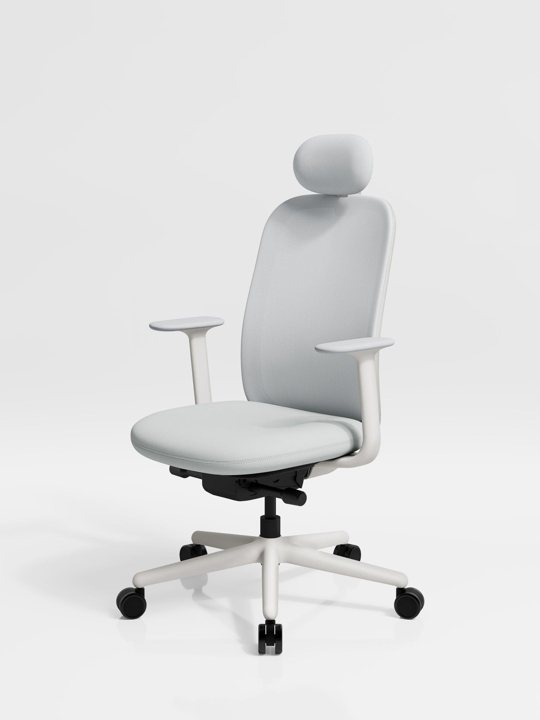 | 239,000원시디즈 공식몰 | 12 | 2,868,000원 | 틸팅 강도 4단 조절, 3시간 이상 수업에 안전 |
| 가성비 ⭐ | 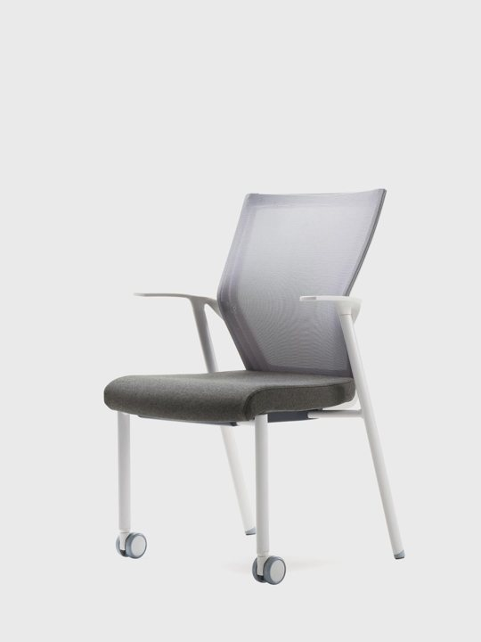 | 189,000원시디즈 공식몰 | 12 | 2,268,000원 | 메시 등판·틸팅 없음(공식). 189,000원은 글라이드형(바퀴형 199,000원). 12개에 약 60만원 절감⚠ 틸팅 없음 → 4시간 이상 수업엔 불편 가능 | |
| 전자칠판 75형 (소파 앞 · 비스듬히, 소파와 ㄷ자 쪽을 향함 · TV 대체)입주 전 필수 | 프리미엄 ⭐ | 사진 없음 제노스미디어 CO750LT4K 75형 전자칠판 (중고, 스탠드 포함) | 1,500,000원당근 중고 (사용자 제공, 링크 미확인) | 1 | 1,500,000원 | 당근 중고 150만원 · 판서+화면 겸용. 패널 1707×1034mm, 스탠드 포함 높이 1840mm, 53.8kg (판매자 제시 값)⚠ 스탠드 고정형·바퀴 없음(판매자 안내, 실물 미확인 · 바퀴 달린 스탠드면 방향 조정이 쉬움) · 중고 상태·AS·설치/운반(54kg) 확인 필요 · 스탠드 바닥 크기는 미확인(도면은 가정) |
| 가성비 | 사진 없음 제노스미디어 CO750LT4K 75형 전자칠판 (중고, 스탠드 포함) | 1,500,000원당근 중고 (사용자 제공, 링크 미확인) | 1 | 1,500,000원 | 당근 중고 150만원 · 판서+화면 겸용. 패널 1707×1034mm, 스탠드 포함 높이 1840mm, 53.8kg (판매자 제시 값)⚠ 스탠드 고정형·바퀴 없음(판매자 안내, 실물 미확인 · 바퀴 달린 스탠드면 방향 조정이 쉬움) · 중고 상태·AS·설치/운반(54kg) 확인 필요 · 스탠드 바닥 크기는 미확인(도면은 가정) | |
| 이동식 화이트보드 180×90 (선택 — 전자칠판이 대체 · 이번 도면엔 자리 없음)나중에 | 프리미엄 ⭐ | 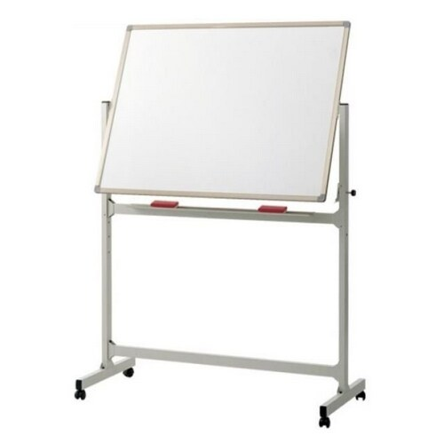 | 154,930원다나와 최저가 | 1 | 154,930원 | 양면 스탠드형, 유리 칠판 대신 이동 가능⚠ 캐스터 여부 상세 미확인 |
| 가성비 | 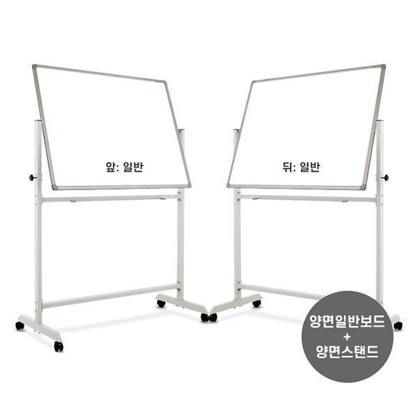 | 155,400원오피스팁 | 1 | 155,400원 | 양면·스탠드 포함. 152,400원+배송 3,000원⚠ 가격 차 거의 없음 · 캐스터 미확인 | |
| 대표석 | ||||||
| 대표 모션데스크 (집에 있는 것 이전) | 보유 | 사진 없음보유 모션데스크 (집→사무실 용달 운반) | 0원 | 1 | 0원 | 구매 아님 — 용달 운반 목록에 포함 |
| 대표석 의자입주 전 필수 | 프리미엄 ⭐ | 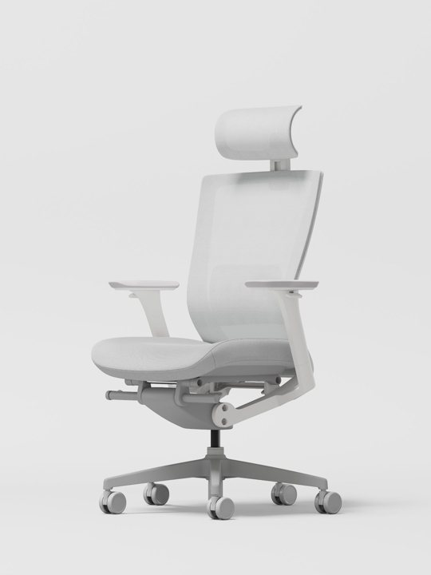 | 419,000원시디즈 공식몰 | 1 | 419,000원 | 시디즈 상위 모델, 장시간 착석용 대표석 |
| 가성비 | 239,000원시디즈 공식몰 | 1 | 239,000원 | 학습자와 같은 모델로 통일, 18만원 절감 | ||
| 기존 물품 | ||||||
| 로봇청소기 + 도크 (기존 사무실 것 가져감) | 보유 | 사진 없음기존 로봇청소기 (모델 미확인) | 0원 | 1 | 0원 | 구매 아님 — 도크는 대표실 왼쪽 끝 창 쪽(도면 참고, 콘센트 위치 추정) |
| 34형 울트라와이드 모니터 + 이동식 스탠드 (가져감) | 보유 | 사진 없음기존 34형 울트라와이드 + 이동식 스탠드 (모델 미확인) | 0원 | 1 | 0원 | 구매 아님 — 대표 책상 위·오른쪽 벽 쪽에 두고(화면은 서쪽) 필요하면 굴려서 사용 |
| 포커스석 (선택) | ||||||
| 포커스 데스크 (칸막이형) · 고정 자리 없음나중에 | 프리미엄 | 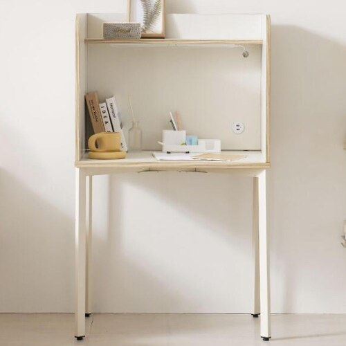 | 296,080원다나와 최저가 | 1 | 296,080원 | 높은 칸막이로 시선 차단, 폭 1200 |
| 가성비 ⭐ | 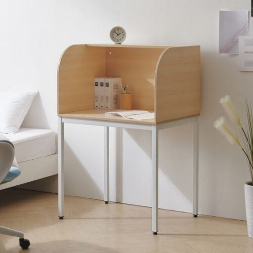 | 94,730원다나와 최저가 | 1 | 94,730원 | 3개에 28만원, 좁은 방에 폭 800 | |
| 포커스 모니터 27형 · 고정 자리 없음나중에 | 프리미엄 | 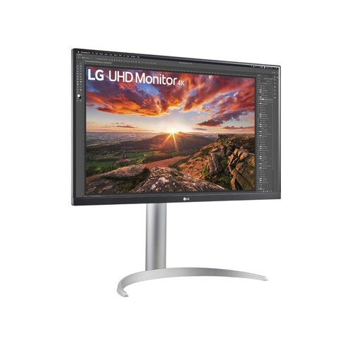 | 399,000원다나와 최저가 | 1 | 399,000원 | 맥북 USB-C 한 줄 연결·4K |
| 가성비 ⭐ | 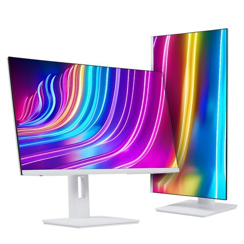 | 168,980원다나와 최저가 | 1 | 168,980원 | QHD, 3대에 약 69만원 절감⚠ USB-C 입력 여부는 판매 페이지에서 재확인 | |
| 모니터암 · 고정 자리 없음나중에 | 프리미엄 ⭐ | 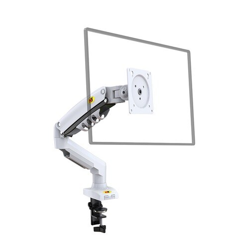 | 29,000원다나와 최저가 | 1 | 29,000원 | 가스스프링, 널리 쓰는 검증 모델 |
| 가성비 | 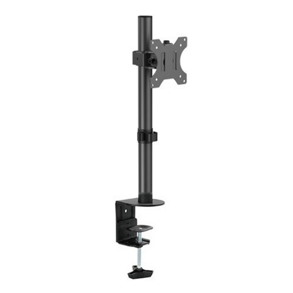 | 28,400원다나와 최저가 | 1 | 28,400원 | 가격 거의 같은 대안 | |
| 서진이 책상 | ||||||
| 서진이 책상 1000×600 (높이조절) · 대표석 옆 창 쪽 벽입주 전 필수 | 프리미엄 ⭐ | 125,900원다나와 최저가 | 1 | 125,900원 | 1000×600급 키즈 전용, 책상 높이 470~550mm로 어린이에게 맞음⚠ 의자·수납은 별도 · 다나와 2026-11-02 표시값 | |
| 가성비 | 67,650원다나와 검색결과 표시값 | 1 | 67,650원 | 1000×600, 약 6.7만원으로 저렴⚠ 최저 높이 640mm라 어린 아이엔 높을 수 있음 · 정확한 단일 상품 페이지 링크 아님(검색결과) · 이케아 공식가 재확인 필요 | ||
| 아지트 코너 (러그·빈백·낮은 책장·텐트) · 아이 의자나중에 | 프리미엄 | 사진 없음 미정 (아이 취향·나이 확인 후 선택) | 미정가격 미확인 | 1 | 0원 | 도면에는 책상 의자만 표시(빈백·코너는 자리 없음) |
| 가성비 | 사진 없음 미정 (아이 취향·나이 확인 후 선택) | 미정가격 미확인 | 1 | 0원 | 도면에는 책상 의자만 표시(빈백·코너는 자리 없음) | |
| 라운지 | ||||||
| 대표실 가벽 · 낮은 책장 ×4 (회의실↔대표실)입주 전 필수 | 프리미엄 ⭐ | 64,900원이케아 공식몰 (2026-11-02 표시값) | 4 | 259,600원 | 낮은 책장 4개를 이어 세워 회의실↔대표실 가벽(높이 약 1.06m, 깊이 28cm). 선반당 최대하중 30kg⚠ 단가 64,900원 ×4 · 배송·조립 별도 · 이케아 안내상 전복 위험이 있어 벽·바닥 고정 필요(가벽은 한쪽 끝만 벽에 닿음 → 서로 연결 고정 방법 현장 확인) · 치수상 4.5m 폭 중 3.2m(4개) 가정, 실제 가벽 길이·위치 미확인 | |
| 가성비 | 64,900원이케아 공식몰 (2026-11-02 표시값) | 4 | 259,600원 | 낮은 책장 4개를 이어 세워 회의실↔대표실 가벽(높이 약 1.06m, 깊이 28cm). 선반당 최대하중 30kg⚠ 단가 64,900원 ×4 · 배송·조립 별도 · 이케아 안내상 전복 위험이 있어 벽·바닥 고정 필요(가벽은 한쪽 끝만 벽에 닿음 → 서로 연결 고정 방법 현장 확인) · 치수상 4.5m 폭 중 3.2m(4개) 가정, 실제 가벽 길이·위치 미확인 | ||
| 빈백나중에 | 프리미엄 | 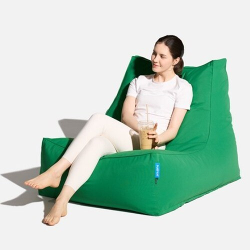 | 214,000원다나와 최저가 | 1 | 214,000원 | 고급 소재, 오래 씀 |
| 가성비 ⭐ | 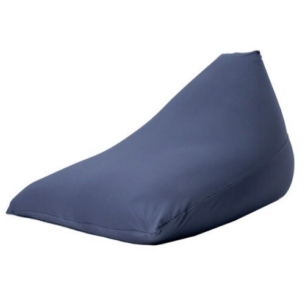 | 54,980원다나와 최저가 | 1 | 54,980원 | 2개에 11만원 | |
| 소파 2인 (오른쪽 벽 · 전자칠판 맞은편 · 12·15석 같음)1개월 내 | 프리미엄 ⭐ | 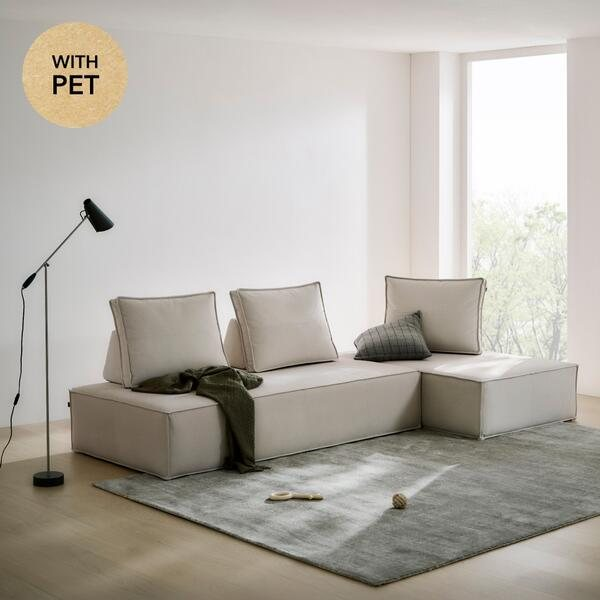 | 750,000원일룸 공식몰 | 1 | 750,000원 | 클린터치 패브릭, 미니멀 톤⚠ 치수가 판매 페이지에 ‘상세페이지 참조’로만 있어 도면 크기는 추정 |
| 가성비 | 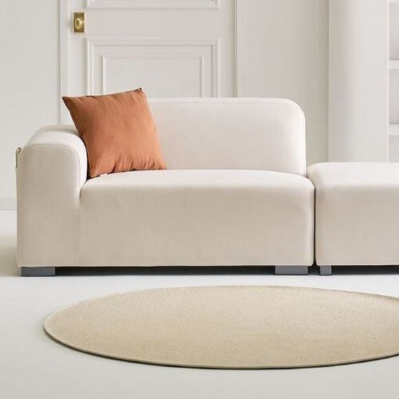 | 79,900원다나와 최저가 | 1 | 79,900원 | 7만원대 가성비⚠ 치수 미확인(도면은 추정 크기) | |
| 티테이블 (소형 원형 · 소파~칠판 사이 0.65m라 선택)나중에 | 프리미엄 | 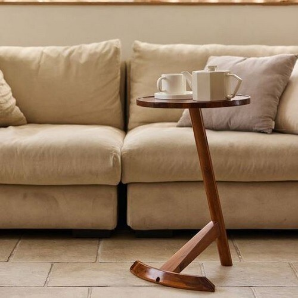 | 37,900원다나와 최저가 | 1 | 37,900원 | 작은 원형 · 소파~칠판 간격 0.65m라 120×59 테이블은 안 들어가 두 안 모두 이 소형으로 통일 |
| 가성비 ⭐ | 37,900원다나와 최저가 | 1 | 37,900원 | 작은 원형 · 소파~칠판 간격 0.65m라 120×59 테이블은 안 들어가 두 안 모두 이 소형으로 통일 | ||
| 공기·습도 | ||||||
| 가습기 (LG 퓨리케어) · 라운지입주 전 필수 | 프리미엄 | 1,519,000원LG전자 공식몰 | 1 | 1,519,000원 | 700cc/h·약 50㎡ 권장, 더 넓은 공간용⚠ 키가 986mm로 커서 라운지에 두면 눈에 띔 · 목록 정상가 1,686,000원, 위 가격은 회원가(결제일 할인 최대 7% 별도) | |
| 가성비 ⭐ | 899,000원LG전자 공식몰 회원가 | 1 | 899,000원 | 정수 복합식·500cc/h·물통 3.4L, 좁은 라운지에 놓기 쉬운 크기⚠ LG 권장 공간 약 35㎡라 44㎡ 전체엔 부족할 수 있음(라운지 한정 사용). 목록 페이지엔 799,000원, 상세 페이지 회원가 899,000원(정상가 1,099,000원) — 높은 쪽 기준 | ||
| 공기청정기 (LG 퓨리케어) · 입구 오른쪽입주 전 필수 | 프리미엄 ⭐ | 368,000원LG전자 공식몰 타임딜가 | 1 | 368,000원 | 44㎡ 사무실 전체를 덮는 62㎡·소형·원통형 360° 흡입⚠ 정상가 754,000원에서 51% 할인된 타임딜 표시가라 종료될 수 있음 | |
| 가성비 | 305,000원LG전자 공식몰 | 1 | 305,000원 | 50㎡ 모델, 약 6만원 저렴⚠ 44㎡ 사무실에 겨우 맞는 용량 · 12~15명이면 62㎡ 권장 | ||
| 탕비 | ||||||
| 냉장고1개월 내 | 프리미엄 | 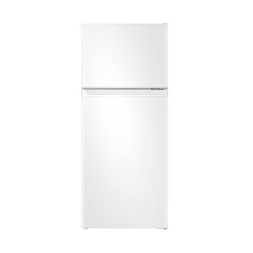 | 435,440원다나와 최저가 | 1 | 435,440원 | 화이트·작은 크기 |
| 가성비 ⭐ | 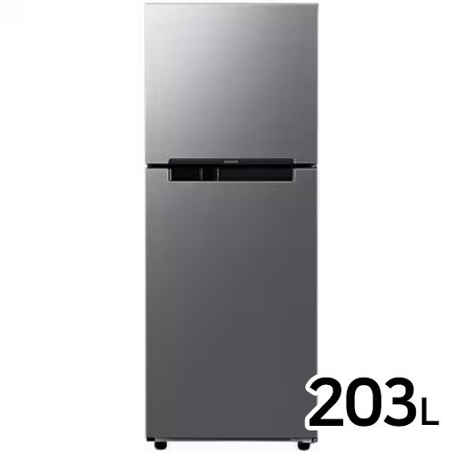 | 335,790원다나와 최저가 | 1 | 335,790원 | 더 크고 더 싼 203L | |
| 정수기 (냉온정 · 직수형) · 입구 왼쪽 탕비 카운터입주 전 필수 | 프리미엄 | 1,498,000원LG전자 공식몰 | 1 | 1,498,000원 | 상위 모델(추가 기능)⚠ 가격은 이전 조회 회원가이고 페이지에서 다시 확인하지 못했어요(정상가 2,140,000원) · 데스크형 직수, 크기·정격입력 2,820W 동일 | |
| 가성비 ⭐ | 1,328,000원LG전자 공식몰 회원가 | 1 | 1,328,000원 | 데스크형 직수·순간냉온수·ThinQ, 선반 위에 올려 쓰는 크기⚠ 구독(6년, 첫 1년 월 14,400원~·필터·케어 포함)도 가능, 일시불은 자가관리형(필터 3년 6회분). 정격입력 2,820W라 단독 콘센트 권장, 급수(상수도) 연결 필요(설치가이드: 수압 낮으면 펌프 46,000원). 목록 페이지엔 1,410,000원 표기도 있음 | ||
| 커피머신1개월 내 | 프리미엄 ⭐ | 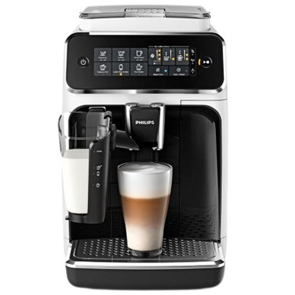 | 701,030원다나와 최저가 | 1 | 701,030원 | 전자동, 라떼·원두, 13명도 대응 |
| 가성비 | 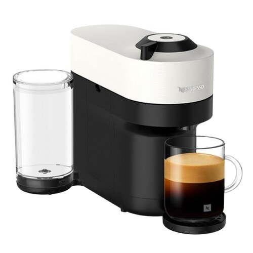 | 77,616원다나와 최저가 | 1 | 77,616원 | 캡슐형 작은 크기⚠ 캡슐 소모비 별도 | |
| 복합기 | ||||||
| 복합기 (인쇄·복사·스캔)입주 전 필수 | 프리미엄 ⭐ | 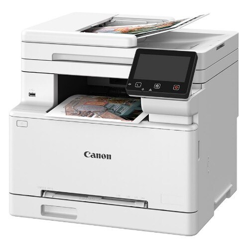 | 489,000원다나와 최저가 | 1 | 489,000원 | 컬러 레이저 25ppm·양면·ADF, 맥 지원⚠ 렌탈 가격은 미조사 |
| 가성비 | 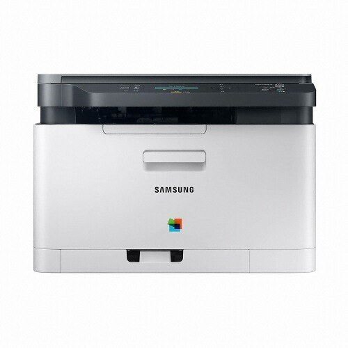 | 315,000원다나와 최저가 | 1 | 315,000원 | 복사·스캔·인쇄 되는 저가형⚠ 컬러 4ppm·흑백 18ppm로 느림 · 렌탈 미조사 | |
| 네트워크·전원 | ||||||
| 공유기 ASUS RT-BE92U (Jeremy 선택)입주 전 필수 | 프리미엄 ⭐ | 378,610원다나와 최저가(2026-11-02) | 1 | 378,610원 | Jeremy가 고른 공유기 · 메시(AiMesh류) 지원 표기 · 무상 3년⚠ LAN 포트가 3개뿐 — NAS·복합기 등 유선 장비가 3대를 넘으면 소형 스위칭 허브 필요 · 20+명 동시접속 성능·사무실 전체 커버리지는 미검증 | |
| 가성비 | 378,610원다나와 최저가(2026-11-02) | 1 | 378,610원 | Jeremy가 고른 공유기 · 메시(AiMesh류) 지원 표기 · 무상 3년⚠ LAN 포트가 3개뿐 — NAS·복합기 등 유선 장비가 3대를 넘으면 소형 스위칭 허브 필요 · 20+명 동시접속 성능·사무실 전체 커버리지는 미검증 | ||
| 소형 스위칭 허브 (공유기 LAN 3포트 보강)1개월 내 | 프리미엄 ⭐ | 사진 없음 미정 (기가비트 또는 2.5G 5~8포트 스위칭 허브) | 미정가격 미확인 | 1 | 0원 | NAS + 복합기 + 대표석 유선 PC 등 공유기 LAN 3개를 넘을 때 추가 · 전자칠판(CO750LT4K)은 LAN이 없는 모델이라 Wi-Fi 전용(Jeremy 확인값, 제가 직접 확인하진 못함)⚠ 가격 미조사(TBD) · 합계 미포함 · 필요 포트 수는 실제 연결 장비로 확정 |
| 가성비 | 사진 없음 미정 (기가비트 또는 2.5G 5~8포트 스위칭 허브) | 미정가격 미확인 | 1 | 0원 | NAS + 복합기 + 대표석 유선 PC 등 공유기 LAN 3개를 넘을 때 추가 · 전자칠판(CO750LT4K)은 LAN이 없는 모델이라 Wi-Fi 전용(Jeremy 확인값, 제가 직접 확인하진 못함)⚠ 가격 미조사(TBD) · 합계 미포함 · 필요 포트 수는 실제 연결 장비로 확정 | |
| 멀티탭 6구 16A 개별스위치 3m입주 전 필수 | 프리미엄 | 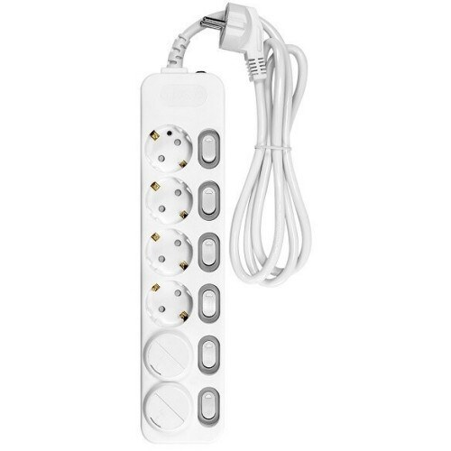 | 16,700원다나와 최저가 | 9 | 150,300원 | 개별 스위치, 노트북 충전용 |
| 가성비 ⭐ | 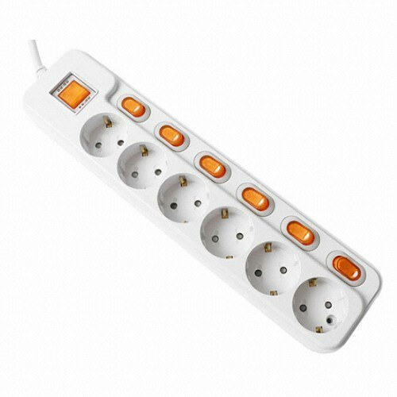 | 12,700원다나와 최저가 | 9 | 114,300원 | 4천원 싸게⚠ 개별스위치·16A 세부는 판매 페이지 재확인 | |
| NAS (집에서 이전) | 보유 | 사진 없음보유 NAS | 0원 | 1 | 0원 | 구매 아님 — 이삿짐으로 운반 |
| 스튜디오 코너 | ||||||
| 조명 (키 라이트 + 보조) (선택·이동식)나중에 | 프리미엄 ⭐ | 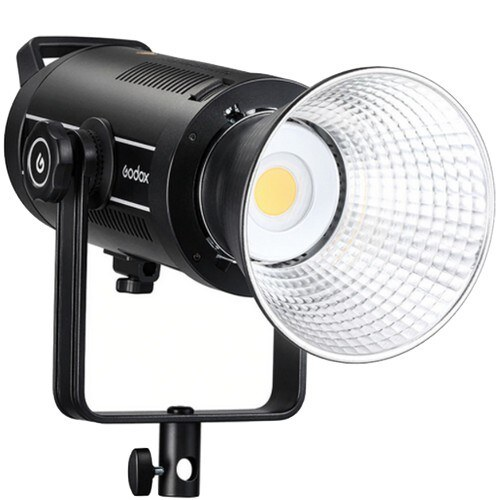 | 350,000원다나와 최저가 | 1 | 350,000원 | 5600K·CRI96, 소프트박스와 쓰면 인물이 깨끗⚠ 소프트박스는 별도(미조사) |
| 가성비 | 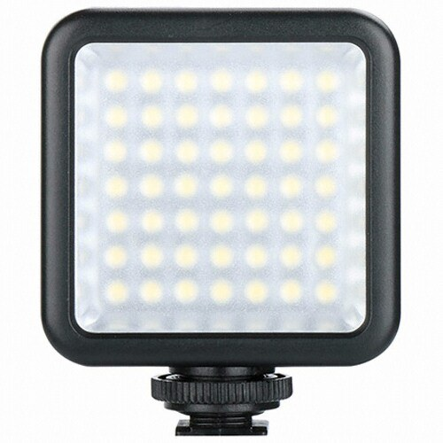 | 8,500원다나와 최저가 | 2 | 17,000원 | AA 건전지식 860lm, 2개로 보조광⚠ 건전지식이라 장시간 촬영엔 부족 | |
| 데스크 마이크 (Shure) (선택·이동식)나중에 | 프리미엄 ⭐ | 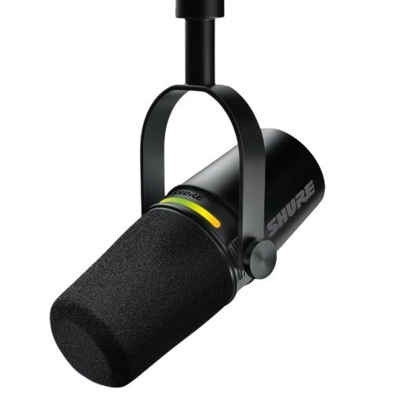 | 494,990원다나와 최저가 | 1 | 494,990원 | USB-C로 맥에 바로 연결, XLR도 가능⚠ 맥 USB-C 호환은 슈어 제품 사양 기준(직접 연결 테스트 안 함) |
| 가성비 | 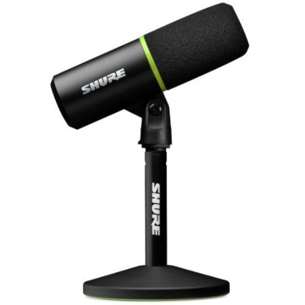 | 265,990원다나와 최저가 | 1 | 265,990원 | USB 게이밍/방송용, 가성비⚠ 맥 호환은 사양 기준 | |
| 참고: SM7B(870,000원, XLR 전용)·MV7X(318,000원, XLR 전용)는 오디오 인터페이스(예: Shure MVX2U 219,000원)가 따로 필요해 표에서 제외했어요. | ||||||
| 무선 라발리에 마이크 (Shure) (선택·이동식)나중에 | 프리미엄 ⭐ | 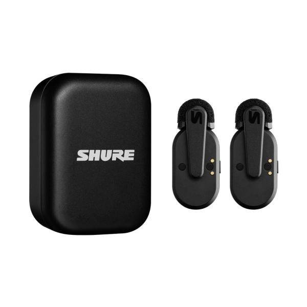 | 620,000원컴퓨존 | 1 | 620,000원 | 제레미+유하님 2인 인터뷰 한 세트⚠ 맥 USB-C 직결 여부는 수신기·앱 구성 확인 필요 |
| 가성비 | 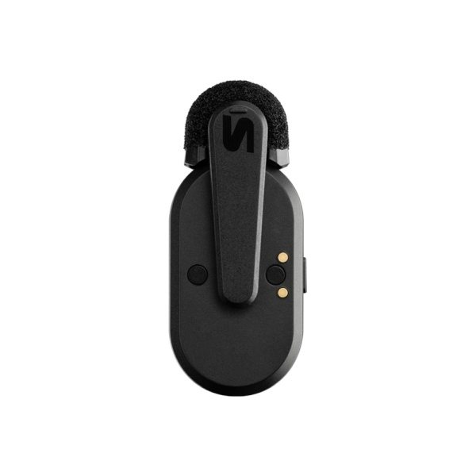 | 442,000원컴퓨존 | 1 | 442,000원 | 1명용 (유하님 쪽만)⚠ 2명이면 Two(620,000원)가 더 저렴 | |
| 카메라 / 웹캠나중에 | 프리미엄 | 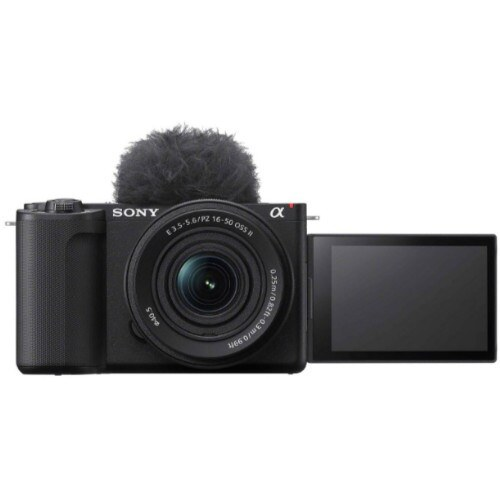 | 1,253,720원다나와 최저가 | 1 | 1,253,720원 | 유튜브 전용 APS-C |
| 가성비 ⭐ | 사진 없음 보유 iPhone (삼각대 촬영) | 0원보유 | 1 | 0원 | 이미 가진 폰이 가장 가성비 | |
| 삼각대 (선택·이동식)나중에 | 프리미엄 | 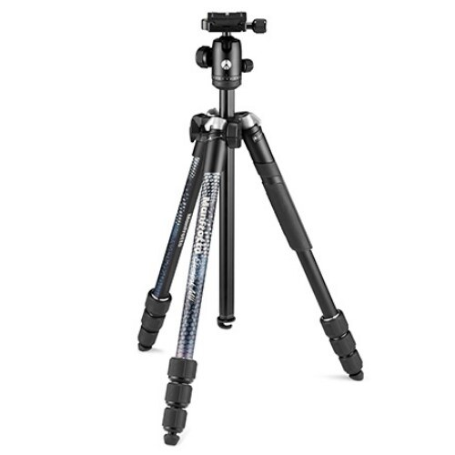 | 159,520원다나와 최저가 | 1 | 159,520원 | 맨프로토 정품 삼각대 |
| 가성비 ⭐ | 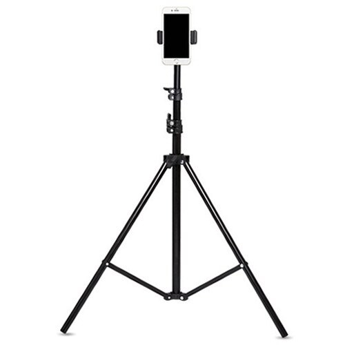 | 15,700원다나와 최저가 | 1 | 15,700원 | 1.5만원대⚠ 폰 거치대 포함 여부 미확인 | |
| 책장 간접조명 LED 스트립 (선택·이동식)나중에 | 프리미엄 | 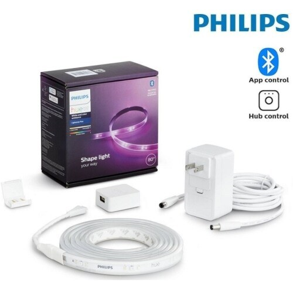 | 97,750원다나와 최저가 | 1 | 97,750원 | 색·밝기 앱 제어 |
| 가성비 ⭐ | 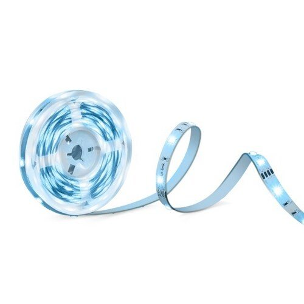 | 24,390원다나와 최저가 | 1 | 24,390원 | 5m에 2.4만원, 색 변경 | |
| 흡음재 (선택, 약 6장)나중에 | 프리미엄 | 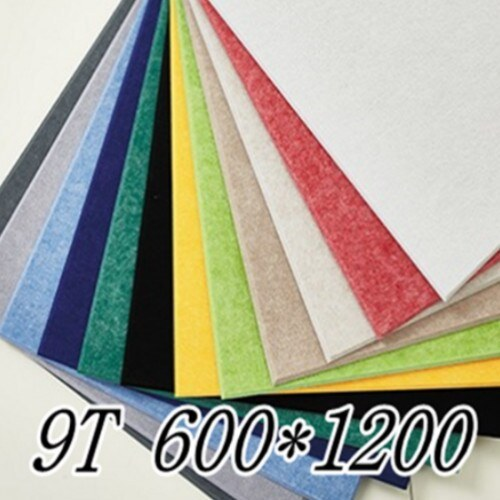 | 6,800원다나와 최저가 | 6 | 40,800원 | 패널형 흡음재 |
| 가성비 | 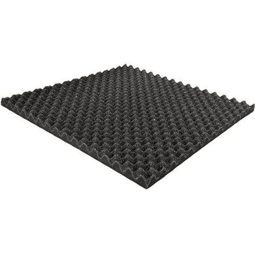 | 6,500원다나와 최저가 | 6 | 39,000원 | 소리 흡수 효과 더 큼 | |
| 스튜디오 촬영 책상 약 1100×500 (Shure 마이크용) (선택·이동식)나중에 | 프리미엄 | 사진 없음 미정 (1100×500급 책상, 높이 약 740) | 미정가격 미확인 | 1 | 0원 | 도면 크기 가정 · 호스트 2명이 나란히 앉는 용도 · 가성비로는 1200×600 책상을 줄여 쓰는 방법도 있음 |
| 가성비 | 사진 없음 미정 | 미정가격 미확인 | 1 | 0원 | 도면 크기 가정 | |
| CCTV · 보안 | ||||||
| 실내 CCTV 카메라 2대 (입구·탕비 / 책상·U)1개월 내 | 프리미엄 | 76,310원다나와 최저가(2026-11-02) | 2 | 152,620원 | 2K·팬틸트라 입구 쪽에서 방향을 조절하고, 프라이버시 모드로 촬영 영역 제외 가능⚠ 전원: 12V DC 어댑터(콘센트 1개/대) · 네트워크: Wi-Fi(공유기 커버리지 확인) · 저장: microSD 최대 512GB(별도) 또는 클라우드(Tapo Care, 구독) | |
| 가성비 ⭐ | 38,280원다나와 최저가(2026-11-02) | 2 | 76,560원 | 고정형이지만 가장 저렴, 벽·선반 설치로 충분⚠ 전원: AC 어댑터(콘센트 1개/대) · 네트워크: Wi-Fi · 저장: microSD(별도) | ||
| CCTV 녹화·저장 (microSD 또는 NVR/NAS)1개월 내 | 프리미엄 | 84,990원다나와 최저가 | 0 | 0원 | PoE 카메라(VIGI 계열)용이라 Wi-Fi Tapo와는 별도 구성. 카메라·HDD 가격 미조사라 수량 0(참고용)⚠ PoE 케이블 배선 필요(LAN 포트·전원은 NVR에서) · HDD 별도(1TB 포함 번들 312,000원 표기) | |
| 가성비 | 사진 없음 카메라 microSD 카드 (128GB 이상 권장) | 미정가격 미확인 | 2 | 0원 | 카메라 슬롯에 직접 녹화 · NAS는 Tapo ONVIF/RTSP 연동 가능 여부 미확인⚠ 카드 가격 미조사(TBD) · 합계 미포함 | |
| 선택 장비 | ||||||
| 빔프로젝터 (선택 · 이번 도면에서는 제외)나중에 | 프리미엄 | 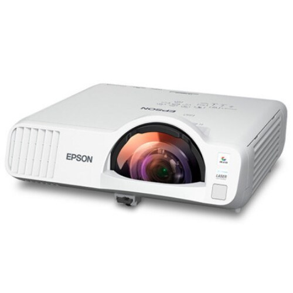 | 1,265,000원다나와 최저가 | 1 | 1,265,000원 | 레이저 4000lm, 소형(325×90×337mm)⚠ 투사거리 사양 미확인 |
| 가성비 | 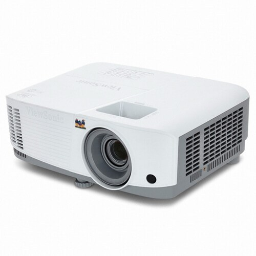 | 530,000원다나와 최저가 | 1 | 530,000원 | 100인치를 3.3m에서 | |
| 프로젝터 스크린 100형 전동 (선택 · 이번 도면에서는 제외)나중에 | 프리미엄 | 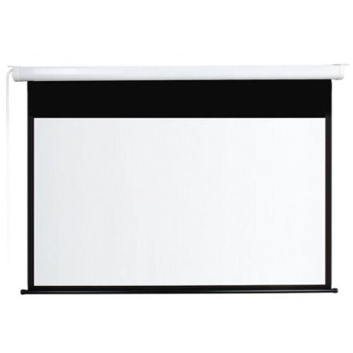 | 309,000원다나와 최저가 | 1 | 309,000원 | 전동 100형 |
| 가성비 | 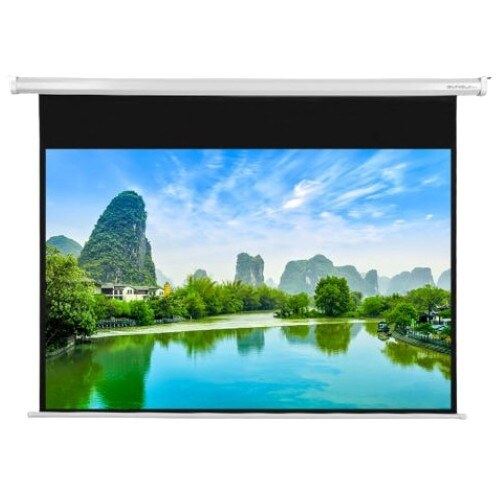 | 158,000원다나와 최저가 | 1 | 158,000원 | 절반 가격 | |
| 프린터·메이커 | ||||||
| 별도 프린터 (복합기와 별개)나중에 | 프리미엄 | 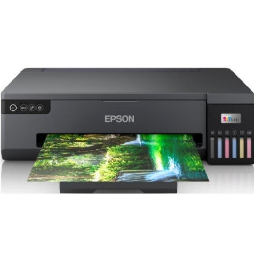 | 549,000원다나와 최저가 | 1 | 549,000원 | 사진·A3 무한잉크, 맥 지원 |
| 가성비 | 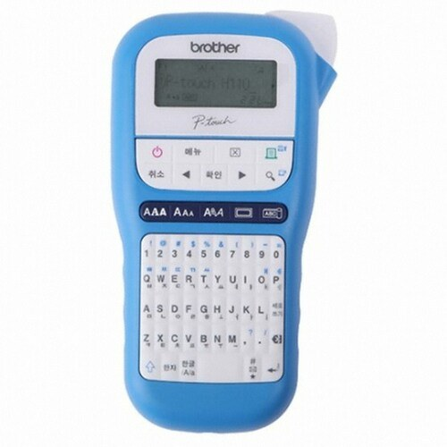 | 59,000원다나와 최저가 | 1 | 59,000원 | 라벨·명찰용 소형 | |
| 3D 프린터 (외부 펜트리 우측 끝)나중에 | 프리미엄 | 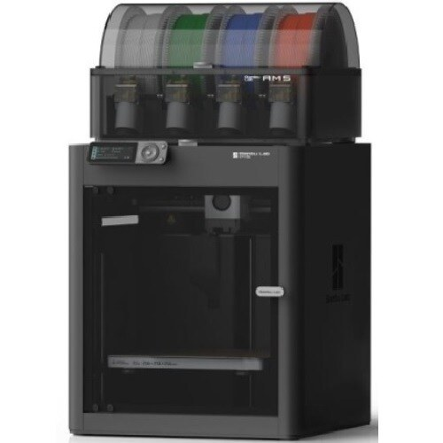 | 749,000원다나와 최저가 | 1 | 749,000원 | 밀폐형이라 냄새·소음 덜함, 256³ |
| 가성비 ⭐ | 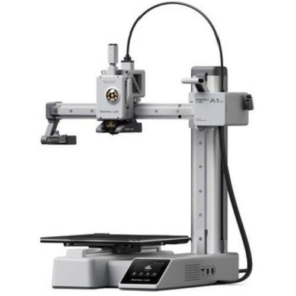 | 279,000원다나와 최저가 | 1 | 279,000원 | 입문용 180³, 2.8만원대⚠ 오픈형 → 외부 펜트리라도 비·먼지·저온 신경 필요 | |
| 12석 · 전부 프리미엄 합계 (보유 0원 포함) | 19,950,890원 | |||||
| 12석 · 전부 가성비 합계 | 11,103,956원 | |||||
전부 프리미엄·전부 가성비 합계에는 프로젝터·스크린·화이트보드·3D 프린터·별도 프린터·카메라·흡음재·포커스석·티테이블 등 ‘나중에/선택’ 품목이 모두 들어 있어요. Mac Studio는 참고용이라 제외했어요.
‘서울대 의자’는 공식 모델명이 아니라 별칭이에요. 블로그·후기들은 시디즈 아이블(IBLE, TNB501FE)을 가리키고, 이전 세대는 T501FE로 소개돼요(대학 납품 사실은 공식 확인을 못 했어요). 퍼시스 CH2811은 ‘연세대 의자’로 불려요.
S라인 메시 등판 · 틸팅 기능 없음(공식 설명) · 189,000원은 글라이드 프레임 기준, 높이조절형/바퀴 옵션은 199,000원(공식몰 표시)
등판 기울기 4단 고정(105°~125°) · 정품 등록 시 5년 품질보증(공식 설명)
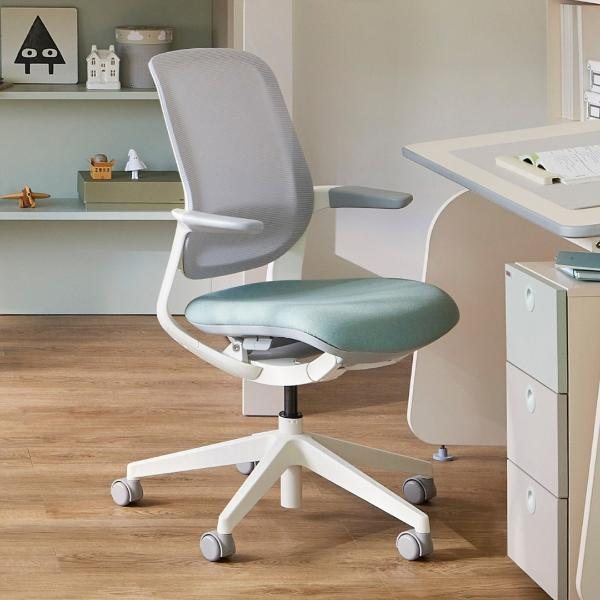
블로그 후기에서 ‘연세대 의자’로 불린다는 내용만 확인
189,000원 × 12 = 2,268,000원. S라인 메시 등판과 글라이드(밀림 적음)라 집중하기 좋아요(바퀴형은 199,000원). 다만 틸팅이 없어 4시간 이상 수업이면 T20 2세대(239,000원, 12개 2,868,000원)를 권해요.
하루 종일 앉는 자리라 상위 모델을 권해요. 예산을 줄이려면 T20(239,000원)이에요.
| 항목 | 등급 | 제품명 + 링크 | 가격(단가) | 수량 | 소계 | 한줄 이유 |
|---|---|---|---|---|---|---|
| 스튜디오 코너 | ||||||
| 조명 (키 라이트 + 보조) (선택·이동식)나중에 | 프리미엄 ⭐ | 350,000원다나와 최저가 | 1 | 350,000원 | 5600K·CRI96, 소프트박스와 쓰면 인물이 깨끗⚠ 소프트박스는 별도(미조사) | |
| 가성비 | 8,500원다나와 최저가 | 2 | 17,000원 | AA 건전지식 860lm, 2개로 보조광⚠ 건전지식이라 장시간 촬영엔 부족 | ||
| 데스크 마이크 (Shure) (선택·이동식)나중에 | 프리미엄 ⭐ | 494,990원다나와 최저가 | 1 | 494,990원 | USB-C로 맥에 바로 연결, XLR도 가능⚠ 맥 USB-C 호환은 슈어 제품 사양 기준(직접 연결 테스트 안 함) | |
| 가성비 | 265,990원다나와 최저가 | 1 | 265,990원 | USB 게이밍/방송용, 가성비⚠ 맥 호환은 사양 기준 | ||
| 참고: SM7B(870,000원, XLR 전용)·MV7X(318,000원, XLR 전용)는 오디오 인터페이스(예: Shure MVX2U 219,000원)가 따로 필요해 표에서 제외했어요. | ||||||
| 무선 라발리에 마이크 (Shure) (선택·이동식)나중에 | 프리미엄 ⭐ | 620,000원컴퓨존 | 1 | 620,000원 | 제레미+유하님 2인 인터뷰 한 세트⚠ 맥 USB-C 직결 여부는 수신기·앱 구성 확인 필요 | |
| 가성비 | 442,000원컴퓨존 | 1 | 442,000원 | 1명용 (유하님 쪽만)⚠ 2명이면 Two(620,000원)가 더 저렴 | ||
| 카메라 / 웹캠나중에 | 프리미엄 | 1,253,720원다나와 최저가 | 1 | 1,253,720원 | 유튜브 전용 APS-C | |
| 가성비 ⭐ | 사진 없음 보유 iPhone (삼각대 촬영) | 0원보유 | 1 | 0원 | 이미 가진 폰이 가장 가성비 | |
| 삼각대 (선택·이동식)나중에 | 프리미엄 | 159,520원다나와 최저가 | 1 | 159,520원 | 맨프로토 정품 삼각대 | |
| 가성비 ⭐ | 15,700원다나와 최저가 | 1 | 15,700원 | 1.5만원대⚠ 폰 거치대 포함 여부 미확인 | ||
| 책장 간접조명 LED 스트립 (선택·이동식)나중에 | 프리미엄 | 97,750원다나와 최저가 | 1 | 97,750원 | 색·밝기 앱 제어 | |
| 가성비 ⭐ | 24,390원다나와 최저가 | 1 | 24,390원 | 5m에 2.4만원, 색 변경 | ||
| 흡음재 (선택, 약 6장)나중에 | 프리미엄 | 6,800원다나와 최저가 | 6 | 40,800원 | 패널형 흡음재 | |
| 가성비 | 6,500원다나와 최저가 | 6 | 39,000원 | 소리 흡수 효과 더 큼 | ||
| 스튜디오 촬영 책상 약 1100×500 (Shure 마이크용) (선택·이동식)나중에 | 프리미엄 | 사진 없음 미정 (1100×500급 책상, 높이 약 740) | 미정가격 미확인 | 1 | 0원 | 도면 크기 가정 · 호스트 2명이 나란히 앉는 용도 · 가성비로는 1200×600 책상을 줄여 쓰는 방법도 있음 |
| 가성비 | 사진 없음 미정 | 미정가격 미확인 | 1 | 0원 | 도면 크기 가정 | |
① 책은 세로·가로를 섞고 색은 화이트/오크/그레이로 맞추세요. ② AI Builders Lab 로고(아크릴·네온)와 화이트보드 낙서 느낌의 액자를 눈높이에. ③ 식물·피규어 같은 소품은 1/3만 채우고 나머지는 비워 여백을 주세요. ④ 선반 안쪽에 LED 스트립을 숨기면 깊이가 생겨요.
| 항목 | 등급 | 제품명 + 링크 | 가격(단가) | 수량 | 소계 | 한줄 이유 |
|---|---|---|---|---|---|---|
| 네트워크·전원 | ||||||
| 공유기 ASUS RT-BE92U (Jeremy 선택)입주 전 필수 | 프리미엄 ⭐ | 378,610원다나와 최저가(2026-11-02) | 1 | 378,610원 | Jeremy가 고른 공유기 · 메시(AiMesh류) 지원 표기 · 무상 3년⚠ LAN 포트가 3개뿐 — NAS·복합기 등 유선 장비가 3대를 넘으면 소형 스위칭 허브 필요 · 20+명 동시접속 성능·사무실 전체 커버리지는 미검증 | |
| 가성비 | 378,610원다나와 최저가(2026-11-02) | 1 | 378,610원 | Jeremy가 고른 공유기 · 메시(AiMesh류) 지원 표기 · 무상 3년⚠ LAN 포트가 3개뿐 — NAS·복합기 등 유선 장비가 3대를 넘으면 소형 스위칭 허브 필요 · 20+명 동시접속 성능·사무실 전체 커버리지는 미검증 | ||
| 소형 스위칭 허브 (공유기 LAN 3포트 보강)1개월 내 | 프리미엄 ⭐ | 사진 없음 미정 (기가비트 또는 2.5G 5~8포트 스위칭 허브) | 미정가격 미확인 | 1 | 0원 | NAS + 복합기 + 대표석 유선 PC 등 공유기 LAN 3개를 넘을 때 추가 · 전자칠판(CO750LT4K)은 LAN이 없는 모델이라 Wi-Fi 전용(Jeremy 확인값, 제가 직접 확인하진 못함)⚠ 가격 미조사(TBD) · 합계 미포함 · 필요 포트 수는 실제 연결 장비로 확정 |
| 가성비 | 사진 없음 미정 (기가비트 또는 2.5G 5~8포트 스위칭 허브) | 미정가격 미확인 | 1 | 0원 | NAS + 복합기 + 대표석 유선 PC 등 공유기 LAN 3개를 넘을 때 추가 · 전자칠판(CO750LT4K)은 LAN이 없는 모델이라 Wi-Fi 전용(Jeremy 확인값, 제가 직접 확인하진 못함)⚠ 가격 미조사(TBD) · 합계 미포함 · 필요 포트 수는 실제 연결 장비로 확정 | |
| 멀티탭 6구 16A 개별스위치 3m입주 전 필수 | 프리미엄 | 16,700원다나와 최저가 | 9 | 150,300원 | 개별 스위치, 노트북 충전용 | |
| 가성비 ⭐ | 12,700원다나와 최저가 | 9 | 114,300원 | 4천원 싸게⚠ 개별스위치·16A 세부는 판매 페이지 재확인 | ||
| NAS (집에서 이전) | 보유 | 사진 없음보유 NAS | 0원 | 1 | 0원 | 구매 아님 — 이삿짐으로 운반 |
| 항목 | 등급 | 제품명 + 링크 | 가격(단가) | 수량 | 소계 | 한줄 이유 |
|---|---|---|---|---|---|---|
| 복합기 | ||||||
| 복합기 (인쇄·복사·스캔)입주 전 필수 | 프리미엄 | 489,000원다나와 최저가 | 1 | 489,000원 | 컬러 레이저 25ppm·양면·ADF, 맥 지원⚠ 렌탈 가격은 미조사 | |
| 가성비 | 315,000원다나와 최저가 | 1 | 315,000원 | 복사·스캔·인쇄 되는 저가형⚠ 컬러 4ppm·흑백 18ppm로 느림 · 렌탈 미조사 | ||
| 프린터·메이커 | ||||||
| 별도 프린터 (복합기와 별개)나중에 | 프리미엄 | 549,000원다나와 최저가 | 1 | 549,000원 | 사진·A3 무한잉크, 맥 지원 | |
| 가성비 | 59,000원다나와 최저가 | 1 | 59,000원 | 라벨·명찰용 소형 | ||
| 3D 프린터 (외부 펜트리 우측 끝)나중에 | 프리미엄 | 749,000원다나와 최저가 | 1 | 749,000원 | 밀폐형이라 냄새·소음 덜함, 256³ | |
| 가성비 | 279,000원다나와 최저가 | 1 | 279,000원 | 입문용 180³, 2.8만원대⚠ 오픈형 → 외부 펜트리라도 비·먼지·저온 신경 필요 | ||
| 항목 | 등급 | 제품명 + 링크 | 가격(단가) | 수량 | 소계 | 한줄 이유 |
|---|---|---|---|---|---|---|
| 선택 장비 | ||||||
| 빔프로젝터 (선택 · 이번 도면에서는 제외)나중에 | 프리미엄 | 1,265,000원다나와 최저가 | 1 | 1,265,000원 | 레이저 4000lm, 소형(325×90×337mm)⚠ 투사거리 사양 미확인 | |
| 가성비 | 530,000원다나와 최저가 | 1 | 530,000원 | 100인치를 3.3m에서 | ||
| 프로젝터 스크린 100형 전동 (선택 · 이번 도면에서는 제외)나중에 | 프리미엄 | 309,000원다나와 최저가 | 1 | 309,000원 | 전동 100형 | |
| 가성비 | 158,000원다나와 최저가 | 1 | 158,000원 | 절반 가격 | ||
12석 추천 조합 기준이에요. 의자 제외 8,642,490원, 의자 포함 11,329,490원, ‘나중에’ 항목(2,324,600원)까지 포함하면 13,654,090원이에요.
| 우선순위 | 항목 | 제품 + 링크 | 수량 | 단가 | 소계 | 구매 |
|---|---|---|---|---|---|---|
| 입주 전 필수 · 소계 9,466,110원 | ||||||
| 입주 전 필수 | 교육 책상 1800×600 (3석/개) · ㄷ자 다리용 |  오프셋퍼니처 TFS/가이아 1800×600 ↗프리미엄 · 퍼스트사무용가구 | 4 | 269,500원 | 1,078,000원 | ☐ |
| 입주 전 필수 | 교육 책상 1200×600 (2석/개) · ㄷ자 바닥용 (추가 구매) | 오프셋퍼니처 TFS/가이아 1200×600 ↗프리미엄 · 퍼스트사무용가구 | 1 | 238,700원 | 238,700원 | ☐ |
| 입주 전 필수 | 학습자 의자 | 시디즈 IBLE (‘서울대 의자’) ↗가성비 · 시디즈 공식몰 | 12 | 189,000원 | 2,268,000원 | ☐ |
| 입주 전 필수 | 전자칠판 75형 (소파 앞 · 비스듬히, 소파와 ㄷ자 쪽을 향함 · TV 대체) | 사진 없음 제노스미디어 CO750LT4K 75형 전자칠판 (중고, 스탠드 포함)프리미엄 · 당근 중고 (사용자 제공, 링크 미확인) | 1 | 1,500,000원 | 1,500,000원 | ☐ |
| 입주 전 필수 | 대표석 의자 | 시디즈 T50 2세대 T51HLDA0KK ↗프리미엄 · 시디즈 공식몰 | 1 | 419,000원 | 419,000원 | ☐ |
| 입주 전 필수 | 서진이 책상 1000×600 (높이조절) · 대표석 옆 창 쪽 벽 | 사진 없음 한샘 샘키즈 높이조절형 책상 996×596 (높이 470~550) ↗프리미엄 · 다나와 최저가 | 1 | 125,900원 | 125,900원 | ☐ |
| 입주 전 필수 | 대표실 가벽 · 낮은 책장 ×4 (회의실↔대표실) | 사진 없음 이케아 BILLY 빌리 책장 화이트 80×28×106 (705.220.44) ↗프리미엄 · 이케아 공식몰 (2026-11-02 표시값) | 4 | 64,900원 | 259,600원 | ☐ |
| 입주 전 필수 | 가습기 (LG 퓨리케어) · 라운지 | 사진 없음 LG 퓨리케어 오브제컬렉션 하이드로에센셜 HY505RWLAH (270×750×270) ↗가성비 · LG전자 공식몰 회원가 | 1 | 899,000원 | 899,000원 | ☐ |
| 입주 전 필수 | 공기청정기 (LG 퓨리케어) · 입구 오른쪽 | 사진 없음 LG 퓨리케어 360˚ 공기청정기 Hit AS186HWWL (315×511×315, 62㎡) ↗프리미엄 · LG전자 공식몰 타임딜가 | 1 | 368,000원 | 368,000원 | ☐ |
| 입주 전 필수 | 정수기 (냉온정 · 직수형) · 입구 왼쪽 탕비 카운터 | 사진 없음 LG 퓨리케어 오브제컬렉션 정수기(맞춤 lite, 냉온정) WD520AWB (168×398×400) ↗가성비 · LG전자 공식몰 회원가 | 1 | 1,328,000원 | 1,328,000원 | ☐ |
| 입주 전 필수 | 복합기 (인쇄·복사·스캔) | 캐논 MF664Cdw ↗프리미엄 · 다나와 최저가 | 1 | 489,000원 | 489,000원 | ☐ |
| 입주 전 필수 | 공유기 ASUS RT-BE92U (Jeremy 선택) | 사진 없음 ASUS RT-BE92U (Wi-Fi 7 BE9700 트라이밴드, WAN 10G 1포트, LAN 2.5G 3포트, USB 3.x 5Gbps 1개) ↗프리미엄 · 다나와 최저가(2026-11-02) | 1 | 378,610원 | 378,610원 | ☐ |
| 입주 전 필수 | 멀티탭 6구 16A 개별스위치 3m | 현대일렉트릭 6구 3m ↗가성비 · 다나와 최저가 | 9 | 12,700원 | 114,300원 | ☐ |
| 1개월 내 · 소계 1,863,380원 | ||||||
| 1개월 내 | 소파 2인 (오른쪽 벽 · 전자칠판 맞은편 · 12·15석 같음) | 일룸 코모 2인 소파 ↗프리미엄 · 일룸 공식몰 | 1 | 750,000원 | 750,000원 | ☐ |
| 1개월 내 | 냉장고 | 삼성 RT20FARL3S9 203L (555×1445×637) ↗가성비 · 다나와 최저가 | 1 | 335,790원 | 335,790원 | ☐ |
| 1개월 내 | 커피머신 | 필립스 3200 EP3243/53 ↗프리미엄 · 다나와 최저가 | 1 | 701,030원 | 701,030원 | ☐ |
| 1개월 내 | 소형 스위칭 허브 (공유기 LAN 3포트 보강) | 사진 없음 미정 (기가비트 또는 2.5G 5~8포트 스위칭 허브)프리미엄 · 미정 | 1 | 0원 | 0원 | ☐ |
| 1개월 내 | 실내 CCTV 카메라 2대 (입구·탕비 / 책상·U) | 사진 없음 TP-Link Tapo C110 (3MP, 고정형, Wi-Fi) ↗가성비 · 다나와 최저가(2026-11-02) | 2 | 38,280원 | 76,560원 | ☐ |
| 나중에 · 소계 2,324,600원 | ||||||
| 나중에 | 이동식 화이트보드 180×90 (선택 — 전자칠판이 대체 · 이번 도면엔 자리 없음) | 두문 이동식 화이트보드 1800×900 ↗프리미엄 · 다나와 최저가 | 1 | 154,930원 | 154,930원 | ☐ |
| 나중에 | 포커스 데스크 (칸막이형) · 고정 자리 없음 | 소담갤러리 파이 800×600×1190 ↗가성비 · 다나와 최저가 | 1 | 94,730원 | 94,730원 | ☐ |
| 나중에 | 포커스 모니터 27형 · 고정 자리 없음 | 크로스오버 27QD166CM ↗가성비 · 다나와 최저가 | 1 | 168,980원 | 168,980원 | ☐ |
| 나중에 | 모니터암 · 고정 자리 없음 | NorthBayou NB F80 ↗프리미엄 · 다나와 최저가 | 1 | 29,000원 | 29,000원 | ☐ |
| 나중에 | 빈백 | 생활특권 쫀득 빈백 ↗가성비 · 다나와 최저가 | 1 | 54,980원 | 54,980원 | ☐ |
| 나중에 | 티테이블 (소형 원형 · 소파~칠판 사이 0.65m라 선택) | 플라팜 라운드 37×37×58 ↗가성비 · 다나와 최저가 | 1 | 37,900원 | 37,900원 | ☐ |
| 나중에 | 조명 (키 라이트 + 보조) (선택·이동식) | GODOX SL150II LED 150W ↗프리미엄 · 다나와 최저가 | 1 | 350,000원 | 350,000원 | ☐ |
| 나중에 | 데스크 마이크 (Shure) (선택·이동식) | Shure MV7+ (USB-C/XLR) ↗프리미엄 · 다나와 최저가 | 1 | 494,990원 | 494,990원 | ☐ |
| 나중에 | 무선 라발리에 마이크 (Shure) (선택·이동식) | Shure MoveMic Two (2인용) ↗프리미엄 · 컴퓨존 | 1 | 620,000원 | 620,000원 | ☐ |
| 나중에 | 카메라 / 웹캠 | 사진 없음 보유 iPhone (삼각대 촬영)가성비 · 보유 | 1 | 0원 | 0원 | ☐ |
| 나중에 | 삼각대 (선택·이동식) | LK-9892 ↗가성비 · 다나와 최저가 | 1 | 15,700원 | 15,700원 | ☐ |
| 나중에 | 책장 간접조명 LED 스트립 (선택·이동식) | TP-Link Tapo L900 5m ↗가성비 · 다나와 최저가 | 1 | 24,390원 | 24,390원 | ☐ |
| 나중에 | 3D 프린터 (외부 펜트리 우측 끝) | 뱀부랩 A1 mini (오픈형) ↗가성비 · 다나와 최저가 | 1 | 279,000원 | 279,000원 | ☐ |
| 총 합계 (12석 · 추천 조합 · 의자 포함 · 나중에 포함) | 13,654,090원 | |||||
구매표의 책상은 아래 후보에서 골랐어요(TV·이동식 스탠드는 전자칠판으로 대체해 구매표에서 뺐어요. 전자칠판은 소파 앞, 비스듬히). ㄷ자에서는 오프셋퍼니처 가이아 1800×600 4개 + 1200×600 1개를 기본으로 잡았어요(데스커 1800×800은 깊이가 커서 안쪽이 좁아져요).


| 기준 | 75형(화면 높이 1034mm 기준) |
|---|---|
| 4× | 4.1m |
| 6× | 6.2m |
| 8× | 8.3m |
상품 사진은 각 판매처·제조사 이미지이며 저작권은 해당 업체에 있어요. 모든 가격은 2026.11.01(KST) 표시값이며 광고·제휴가 없어요. 링크는 각 항목의 ‘제품명 + 링크’를 확인하세요.